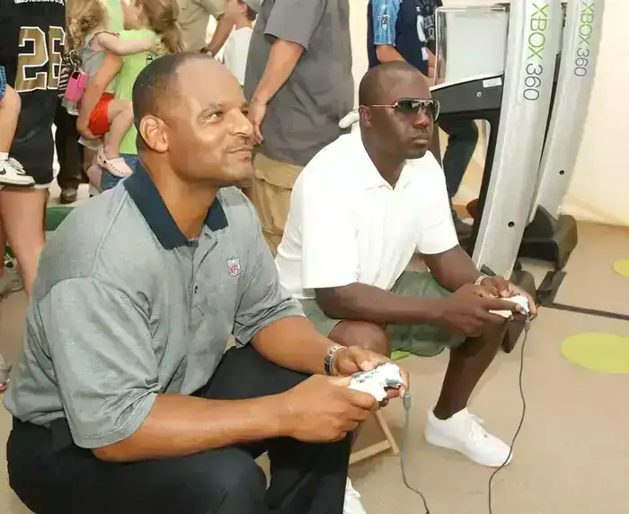

The claim
The 'Madden curse' holds that the athlete featured on the cover of the Madden NFL video game will suffer an injury, a poor season or some other misfortune in the following year. The list of cases is long and often cited.
Maps, diagrams and images


The problems
American football has a high injury rate: a significant fraction of players miss games each season, so a cover athlete is likely to be affected by chance alone. Several cover athletes have had excellent seasons, and they are omitted from the lists. Analyses of the record find the hit rate close to what the base rate predicts.
The curse is a good example of a prediction with a high prior probability and a selective memory.
Documented: the covers and the outcomes.
Documented: the high injury rate in the sport.
Not established: any causal link.
The method: counting hits, ignoring misses.
The label: debunked.
Why it is in the archive
Because it is the cleanest sports curse, and because the base rate is the whole answer.
Open resources on this topic
- PapersOpen-access articles: DOAJ · PubMed Central · Internet Archive Scholar
- BooksPublic-domain and borrowable copies: Open Library · Project Gutenberg · Google Books · Internet Archive
More images
Cite this page
Momin, S. (2026). The Madden Curse. The Larger World Archive. https://drsamonline.github.io/LARGE_GLOBE/madden-curse.htmlMomin, Sohil. “The Madden Curse.” The Larger World Archive, 2026, https://drsamonline.github.io/LARGE_GLOBE/madden-curse.html.Momin, Sohil. “The Madden Curse.” The Larger World Archive, 2026. https://drsamonline.github.io/LARGE_GLOBE/madden-curse.html.@misc{the2026madden,
author = {Momin, Sohil},
title = {The Madden Curse},
year = {2026},
howpublished = {The Larger World Archive},
url = {https://drsamonline.github.io/LARGE_GLOBE/madden-curse.html},
note = {Last reviewed 20 November 2026}
}Last reviewed 20 November 2026 · Corrections policy · this page is not peer reviewed
Sources for this page
- Wikipedia, “Madden curse” — the claimen.wikipedia.org
- Wikipedia, “Madden NFL” — the gameen.wikipedia.org
- Wikipedia, “Base rate fallacy” — the erroren.wikipedia.org
- Wikipedia, “Sports injury” — the base rateen.wikipedia.org